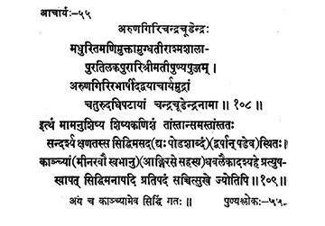

55. आचार्य - 55 - अरुणगिरिचन्द्रचूडेन्द्रः
मधुरित ••• चन्द्रचूडेन्द्रनामा ॥ १०८ ॥
इत्थं ••• ज्योतिषि॥ १०९ ॥
अयं गतः ॥
Heaps of merits embodied as the son of Purāri and Śrīmati of the town Aśmaśālapura on the banks of the sweet river Maṇimukta, Aruṇagiri governed the preceptor-ship of the Pīṭha surrounded by the four oceans as preceptor candracūḍa.
Sri Kṛṣṇapremi's edition
Thus having imparted the teachings to me, the insignificant disciple and guiding me through various aspects pertaining to the Pīṭha, the preceptor who remained in the Pīṭha for sixteen years and attained siddhi in a moment, he merged in the Supreme Effulgence (of the nature) Saccitsukha devoid of calamities, on the eleventh day of the bright fortnight early morning of the month of Mīna of the year Svabhānu at Kañci.
Polakam Rāmaśāstri edition
Thus having imparted the teachings to me, the insignificant among disciples and guiding me through all aspects relating to the Pīṭha, the preceptor who stayed at the Maṭha for only six years at siddhi in a moment, he merged in the Eternal Bliss, the Supreme Effulgence, devoid of calamities at the dawn of eleventh day of bright fortnight of the Mārgaśīrṣa month in the year Āṅgīrasa at Kañci.
This preceptor attained siddhi at Kañci.
Thus the text Puṇyaślokamañjarī along with Laghuvṛtti authored by Śrī Sarvajñasadhāśiva Bodhendra, the fifty-sixth preceptor and disciple of His holiness Jagadguru Śrī Candracūḍendra Pūjyapāda of Śrī Kāñci Kāmakoṭi Pīṭha.
